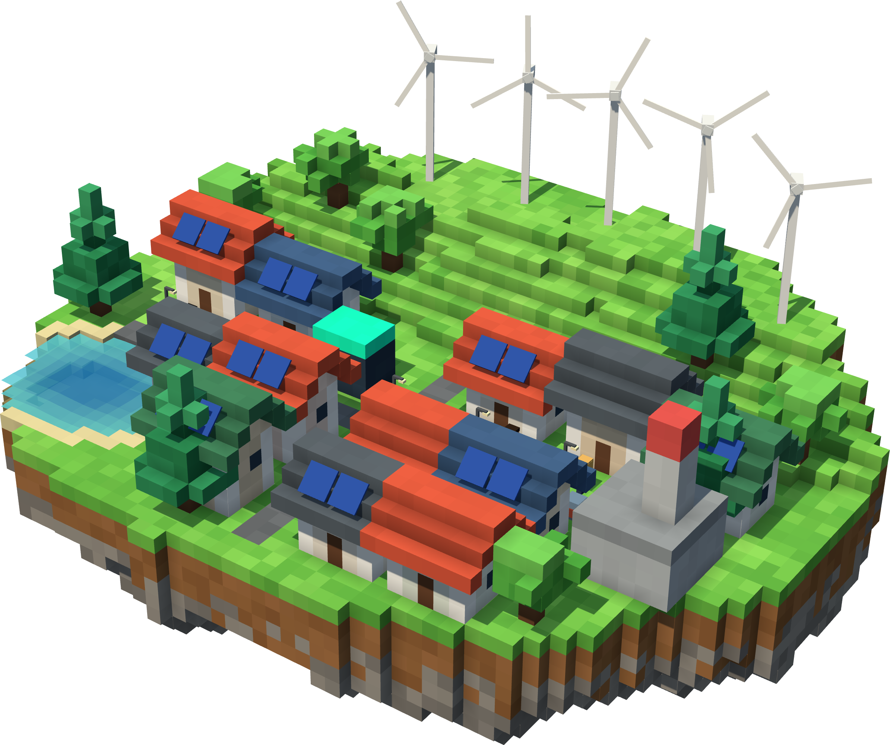

Partner guide
AI learning labs
your team can run
Safe, guided labs that help children understand how AI responds to instructions, led by the staff who know them best.

4Featured missionKeep the lights on after dark
Learn to describe your outcomes for AI
deltaopslearning.com